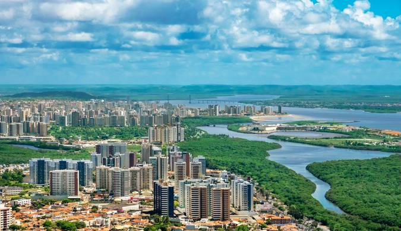

Sergipe, o menor estado do Brasil, está localizado no nordeste do país e é conhecido por seu litoral encantador, com praias como Aracaju, sua capital, e a famosa Praia do Saco. O estado também possui um rico patrimônio cultural, com festas tradicionais como o Forró Caju e o São João, além de uma culinária saborosa, com destaque para o caranguejo e a moqueca. A economia sergipana é voltada para a agricultura, a indústria e o turismo, especialmente pela beleza de suas praias e a hospitalidade de seu povo. Sergipe é um estado de grande charme, onde história, cultura e natureza se encontram de forma única.
 Voltar